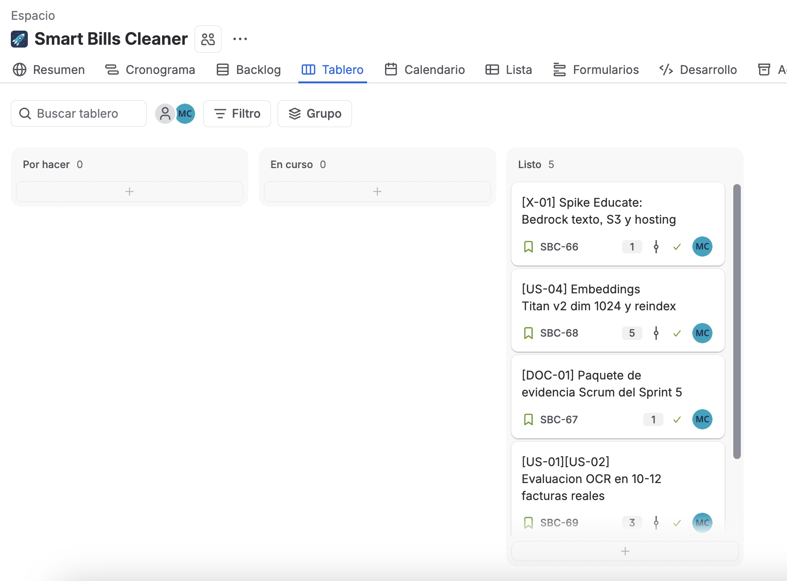
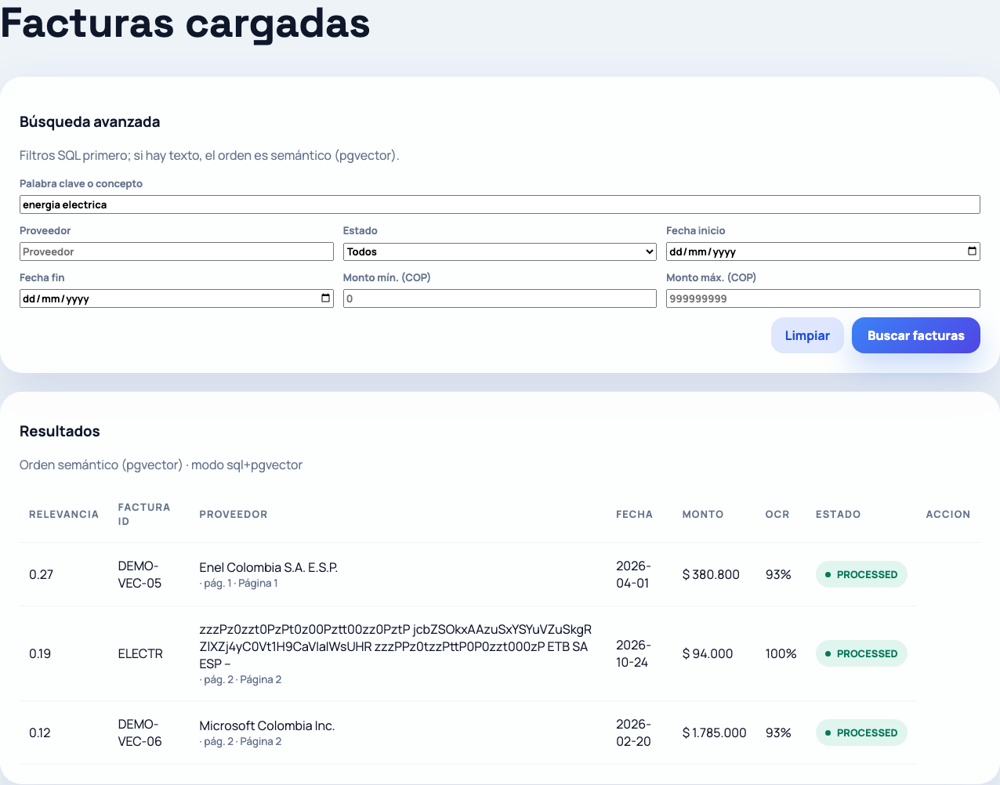
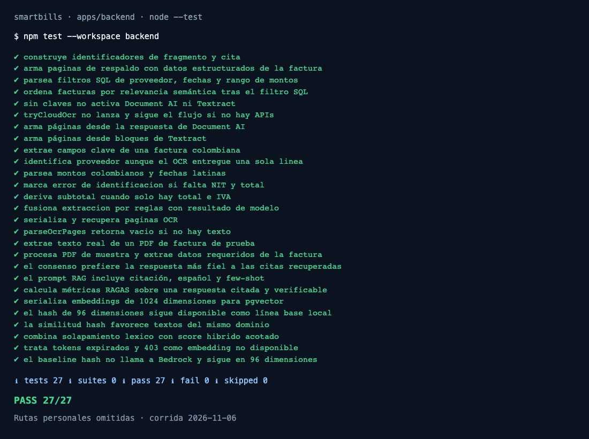
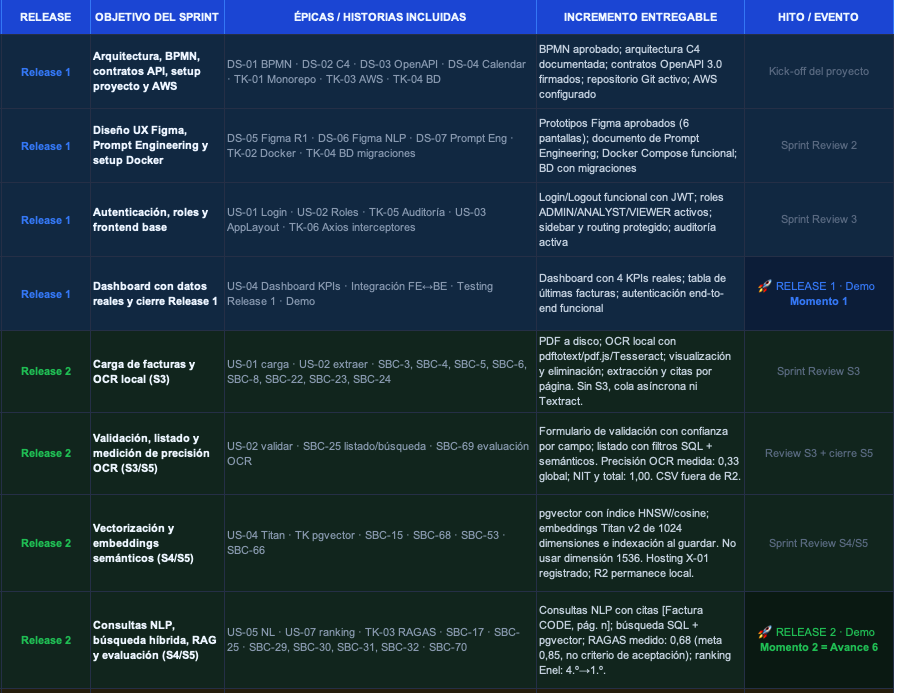
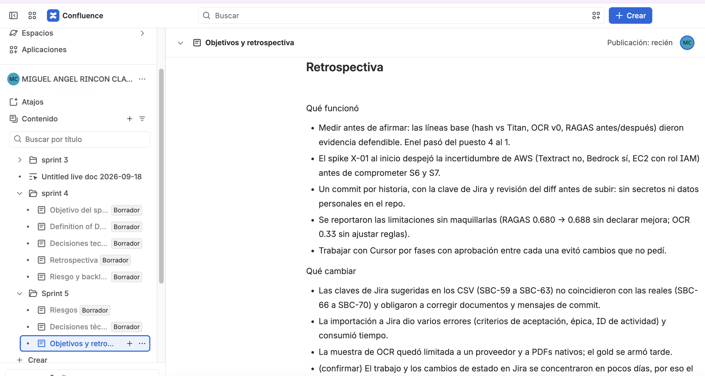
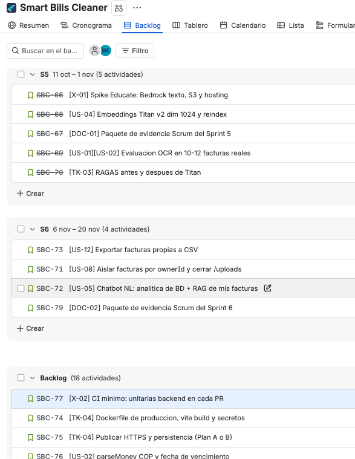

Release 2: búsqueda semántica con Titan, medida en 16 consultas
Sprints 3, 4 y 5 · producto en local · corpus DEMO-VEC
Miguel Rincón · Maestría en Desarrollo de IA · Trabajo de grado
Cinco secciones
Release 2 corre en local. Falta aislar dueños y publicar.
Dónde está el producto
- S3 Ingesta OCR y CRUDListo
- S4 Vectores, RAG, híbridaListo
- S5 Titan 1024 y mediciónListo en local
- S6 Cada usuario ve lo suyoSiguiente
- S7 URL con HTTPSSiguiente
Entra en R2
Carga, OCR medido, listado, Titan 1024, búsqueda híbrida y RAG con citas. 13 de 13 SP en git, DOC-01 cerrado.
Ajustado o pendiente
Sin Textract, sin cola, disco local. Cuatro campos OCR no se extraen. No hay URL pública ni aislamiento de dueño.
De la factura al ranking medido
Compromiso 13 SP: cinco Done en git
| Historia | SP | Git |
|---|---|---|
| SBC-66 X-01 | 1 | 7e9f0dd |
| SBC-68 US-04 | 5 | 02f2bb7 |
| SBC-69 OCR eval | 3 | 2ea614d |
| SBC-70 RAGAS | 3 | cd5cc91 |
| SBC-67 DOC-01 | 1 |

jira-s5-tablero.png
Scrum adaptado: una persona, tres roles en momentos distintos
La propuesta del proyecto integrador fija Scrum como marco: Product Backlog, sprints con objetivo, incremento demostrable y Definition of Done. El equipo es de una persona, así que los roles no se inventan como un grupo ficticio: se simulan con responsabilidades separadas en el tiempo. Primero se prioriza (PO), después se construye y se prueba (Developer), y al cierre se inspecciona el proceso (Scrum Master). Jira guarda el backlog; git guarda el incremento.
Jefferson Peña asesor
Prioriza el backlog, recorta extras y decide qué entra en el Release 2. En S5 el tope fue 13 SP + 3 de buffer, sin gastar el buffer en alcance nuevo.
El mismo, en la ejecución
Implementa la historia, corre las pruebas y deja evidencia. Una historia, un commit con clave SBC-n. DoD: unitarias en verde antes de Done.
Miguel angel rincon · el estudiante
El tutor cuida el marco. En el día a día el estudiante deja planning, review y retro por escrito (Confluence + git). No hay dailies inventados.
Prácticas de la propuesta, aplicadas en S3–S5
Lo que pide la rúbrica: describir las prácticas y mostrar que coinciden con las planeadas.
| Práctica (propuesta) | Cómo se usó | Evidencia |
|---|---|---|
| Product Backlog | Historias SBC-n en Jira, priorizadas por valor | tablero S5 · captura backlog |
| Sprint Planning | Goal + compromiso en SP (S5: 13 + 3 buffer) | plan-vigente-s5-s8.md |
| Sprint Backlog | Solo las HU del sprint; extras no se cuelan | SBC-66 a 70 |
| Incremento | Al cierre hay software que se demuestra | Docker local · demo DEMO-VEC |
| DoD | Prueba + commit con clave + sin secretos | 27/27 · mensajes SBC-n |
| Review / Retro | Criterios vs hecho; 1 ok / 1 cambiar / 1 acción | Confluence S5 · esta review |
| Release Plan | R2 actualizado; desvíos justificados | diapositiva 16 |
Cómo se construye el incremento: de la HU al vector
Cada historia sigue el mismo camino técnico: se parte de un ticket, se implementa en una rama, se prueba y se indexa. El núcleo de R2 es el pipeline de documento: el PDF entra, el OCR local saca texto, Titan lo convierte en un vector de 1024 y pgvector lo ordena. Si Bedrock no responde, la lista no se rompe: pasa a modo degradado (SQL + léxico) y no mezcla un embedding de 96 con uno de 1024.
| Capa | Tecnología | Decisión de diseño |
|---|---|---|
| UI | React 18 + Vite | Carga, listado y consultas con citas |
| API | Express 4 + JWT 12 h | REST; roles ADMIN / ANALYST / VIEWER |
| Datos | PostgreSQL 15 + pgvector HNSW | Un solo espacio vectorial, dim 1024 |
| OCR | pdftotext / pdf.js / Tesseract | Local; Textract no está en la cuenta |
| IA | Titan v2 + RAG extractivo Top-5 | Recupera Titan; la respuesta cita la página |
Búsqueda híbrida + RAG citado Top-5
«El ranking semántico lo hace Amazon Titan Embed Text v2, dimensión 1024. El RAG cita la página; no inventa.»
Titan 1024: Enel pasa al 1.º lugar
Consulta energia electrica · proveedor vacío · modo sql+pgvector
«Busco con Titan, no con el hash: SQL primero y Titan Embed v2 después. DEMO-VEC-05, Enel, queda primera.»

Titan 1024 · en vivo · DEMO-VEC-05 1.º

Línea base hash · Enel 4.º · no es ranking Titan
Cuanto pague de energia electrica con Enel?
Respuesta con [Factura DEMO-VEC-05, pág. 1] · Top-5 · generador local
«Titan recupera el Top-5. La respuesta es extractiva local y cita [Factura DEMO-VEC-05, pág. 1].»

Madrid: sin evidencia verificable
El sistema no inventa una cita.
«Con Titan, si el corpus no tiene Madrid, no hay cita. Vacío es el resultado correcto.»

Criterios de aceptación: estado por historia
| Historia | Criterio | Estado |
|---|---|---|
| SBC-3/4/5/6/22 | Campos, CRUD, citas | ✓ Cumplido |
| SBC-8 OCR | PDF operativo en local | △ Ajustado sin Textract |
| SBC-15/17/25/29 | pgvector, NL, híbrida, RAG | ✓ Cumplido |
| SBC-66/68/70 | Hosting, Titan, RAGAS medido | ✓ Cumplido |
| SBC-69 OCR eval | Medir; 0,4 ≠ 90 % | △ Ajustado |
| SBC-67 DOC-01 | Evidencia Scrum + commit |
12 → 24 → 27 unitarias. p95 91,9 ms

terminal-27-tests.png · 6 nov 2026
11/11 endpoints p95 < 4 s. Peor: login 91,9 ms. Local, 15 oct.
Titan sube la factura esperada al 1.º lugar
Puesto por consulta · 1 arriba es mejor
En 1.º lugar: 10/15 hash → 15/15 Titan
5 consultas suben de puesto · Q01 Enel 4.º → 1.º
Release Plan y Product Backlog, con justificación

Release Plan actualizado · R2
R2 se cierra en local con las HU de este momento. Lo que la propuesta ponía en nube de aplicación (URL, S3, Textract, cola) se justifica y se mueve: no cabe en Educate o bloquea el aislamiento.
| Desvío | Por qué se ajustó |
|---|---|
| URL pública | S7; primero US-08 y EC2 con rol IAM |
| Textract | No disponible en la cuenta de estudiante |
| Cola SQS | OCR síncrono suficiente en PDF nativo |
| 1024, no 1536 | Dimensión nativa de Titan v2 |
Qué se cerró, qué se ajustó, qué sigue
| Observación | Estado | Hecho |
|---|---|---|
| Release Plan | △ Ajustada | Plan S5–S8 escrito |
| Cerrar R2 | △ Ajustada | Producto en local |
| Cola / Textract | △ Ajustada | OCR síncrono local |
| Precisión OCR | ✓ Cerrada | v0, 13 PDF, 0,4 |
| Dataset ranking | ✓ Cerrada | 16 consultas |
| Context precision 0,44 | △ Ajustada | Medida; |
| Answer relevancy 0,31 | △ Ajustada | Extractivo local |
| Eval S4 vs S5 | △ Ajustada | 5 preguntas; corpus creció |
| Jira → Git → Done | ✓ Cerrada | Ticket, 27/27 y Done |
| Demo IA | ✓ Cerrada | Diapositivas 9–12 |
| E2E / URL nube | ● Pendiente | URL en S7 |
Retrospectiva S5 en Confluence

assets/confluence-s5.png · DOC-01
S6 aísla datos. S7 publica la URL.

Product Backlog actualizado
S6 núcleo
US-08: cada usuario ve solo las suyas. Cerrar archivos públicos. Evidencia Scrum del sprint.
S6 extra
Chat de totales. Exportar CSV. Si no caben, salen primero.
S7
Primero imagen de producción y secretos fuera del código; después URL con HTTPS (EC2 + rol IAM).